Jay — build log
Notes, evidence and screenshots from building a.skh.am/jay · 9 Oct 2026
The brief
“A completely local transcription service for medical transcription… in-browser WASM, high-perf small model… all audio stays on device, recording or upload, streaming if the model supports it, search, history of previous audio, a sidebar of sessions with many upload/recording turns, export/clear local storage. Style it as Jay with a creative birdsong theme. Deploy when ready.”
Then, mid-build: “a one-time online download is fine… or inline a really small one like Parakeet and ship a compiled wasm blob so it just works on open”, “don’t worry about overt security, it should be smooth”, and “get a version up now and iterate live”.
What it is
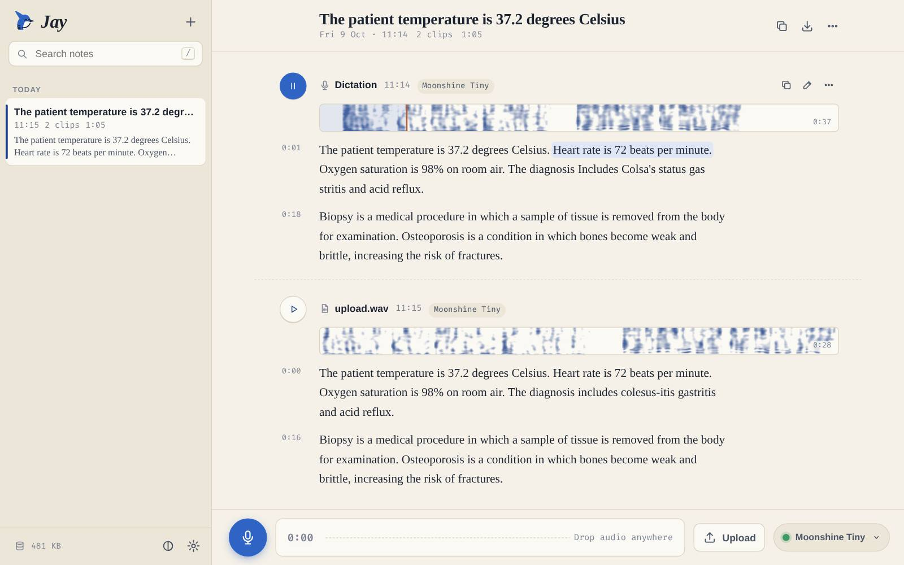
- Speech recognition runs in a module worker on ONNX Runtime Web (WebAssembly SIMD, multi-threaded). No server, no API, no account.
- Moonshine Tiny (MIT) ships with the page, so it works on first open and offline afterwards. MedASR (Google’s clinical model) and Moonshine Base are one-click downloads, cached on the device.
- Record with live, streaming partials, or drop any audio/video files. Sessions hold many clips; everything is searchable, editable, exportable (Markdown / text / JSON) and backed up or restored as one file.
- Audio, transcripts and history live only in the browser’s IndexedDB. It is an installable PWA and keeps working with no network.
Choosing a model that fits in a static site
The site is plain GitHub Pages with a 10 MB per-file and 25 MB media budget, so “inline Parakeet” got sized up first:
| Candidate | Smallest usable build | Verdict |
|---|---|---|
| NVIDIA Parakeet CTC 0.6B | 455–611 MB | Too big to ship, or for a first visit |
| Google MedASR (105M Conformer-CTC) | 108 MB int8 | Download once: the medical model |
| Moonshine Streaming Tiny | ~76 MB (5 graphs) | Real streaming, but its decoder alone is 54 MB |
| Whisper tiny.en | ~40 MB | Bigger and weaker than Moonshine at this size |
| Moonshine Tiny (27M) | 28 MB → 20.7 MB gz | Ship it, gzip-sharded |
| ORT Web CPU wasm (SIMD+threads) | 14.2 MB → 3.7 MB gz | Ship it; the WebGPU build (28 MB) is not needed |
$ python3 _tools/jay-assets.py download onnxruntime-web-1.30.0.tgz sha256 ✓ download moonshine-tiny encoder_model_quantized sha256 ✓ 7,937,661 → 5,579,595 gz download moonshine-tiny decoder_model_merged_q sha256 ✓ 20,243,286 → 15,109,335 gz (2 shards) ort-wasm-simd-threaded.wasm 14,239,897 → 3,652,765 gz Jay assets verified: 24,341,695 bytes of gzip shards $ python3 scripts/check-static.py Static sites: 124 files; 22,773,654 media + 24,732,788 model bytes; links and budgets valid
Model/runtime bytes got their own reviewed 40 MB budget, so the existing 25 MB media budget for the rest of the site is unchanged. The browser reassembles the shards, gunzips them with DecompressionStream, checks the SHA-256 and caches them.
Proving the pipeline before the UI
Python reference: MedASR vs Moonshine Tiny on clinical dictation
Public MedASR test clips, run through onnxruntime on CPU with greedy decoding. The radiology clip is 43.8 s.
MED [EXAM TYPE] CT chest PE protocol {period} [INDICATION] 54-year-old female, shortness of
breath, evaluate for PE {period} … No saddle embolus {period} Lungs {colon} No pneumothorax
{period} Small bilateral effusions {comma} right greater than left {period} [IMPRESSION] …
MOON Exam types CTE Chespee, Protocol Period, Inucation 54-year-old female shortens of breath,
evaluate for BE period … nosatal, endless period, lungs colon, no new mirth or ax period
MedASR is clearly the right engine for clinical vocabulary. It even emits {period} and [SECTION] tokens, which Jay renders as punctuation and report headings. Moonshine Tiny is fine for general speech.
leading-silence pad 0.00 s → "mmunology is the study…" "please take your…" "Hear rate is 72…" 0.25 s → "Immunology is the study…" "Please take your…" "Heart rate is 72…"
Porting the DSP to JavaScript
log-mel (LasrFeatureExtractor port) 298 frames × 128 mels in 19 ms · max |JS − NumPy| = 0 48 → 16 kHz worklet resampler (windowed sinc, 64× table) 440 Hz gain 1.000 · 1 kHz 1.000 · 6 kHz 1.000 · 7.6 kHz 0.306 · 9 kHz 0.000 · 12 kHz 0.000 44.1 kHz input: same response · ~1% of one core
Making a field-guide sonogram
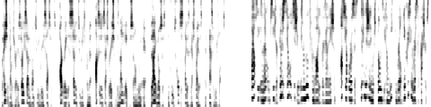
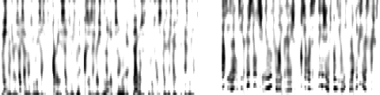
The mark
The app
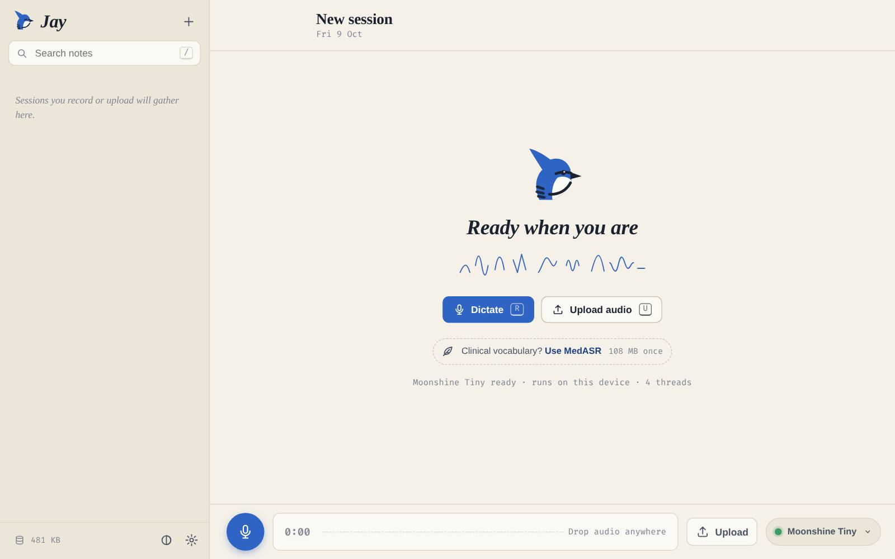
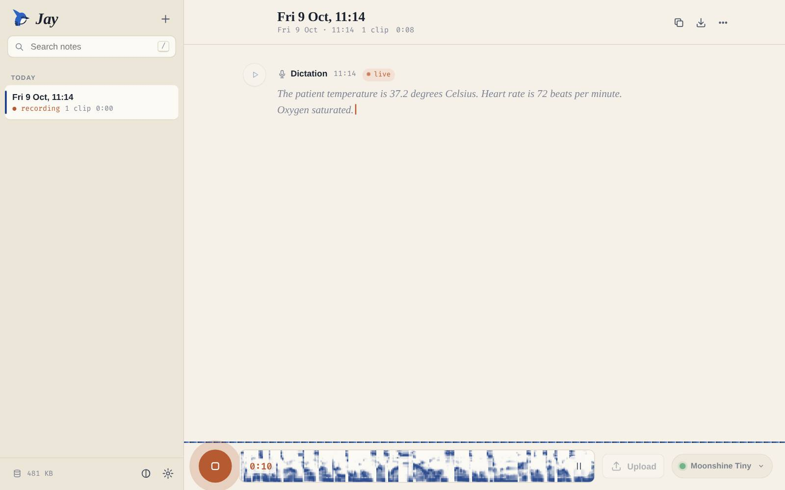
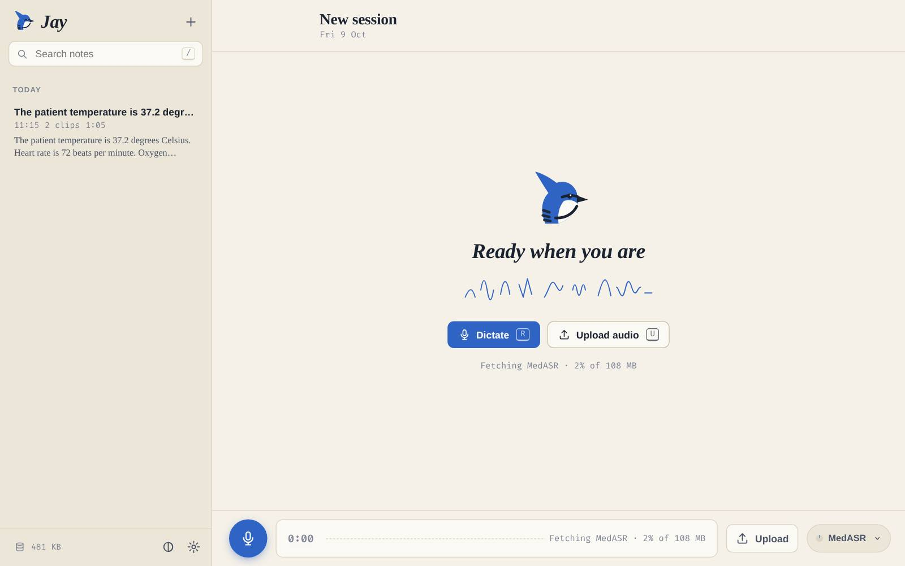
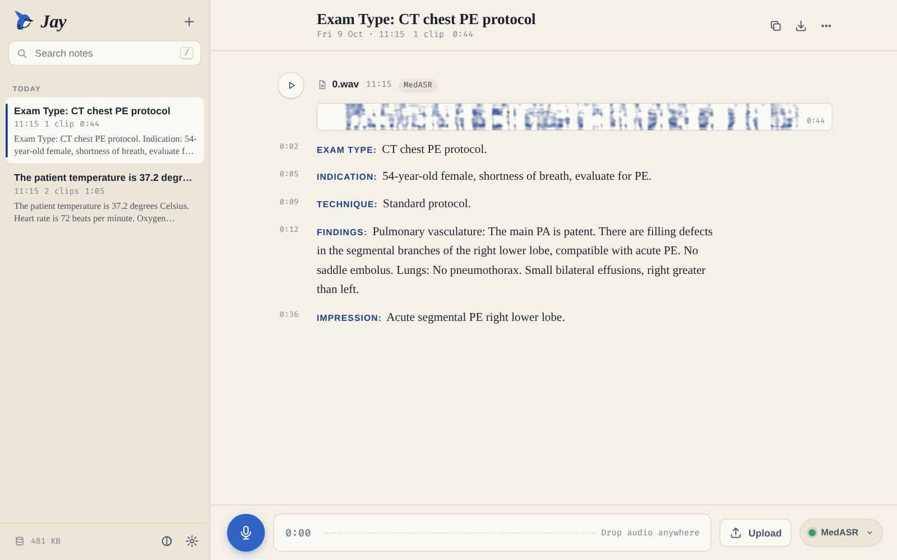
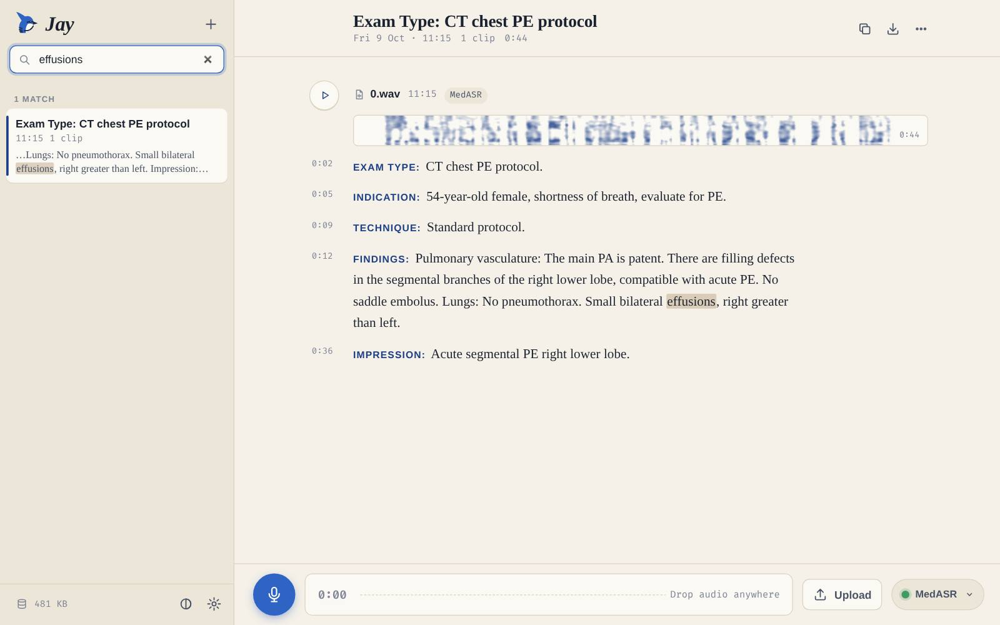
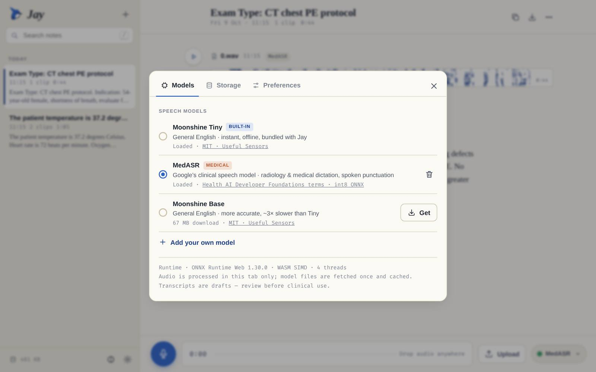
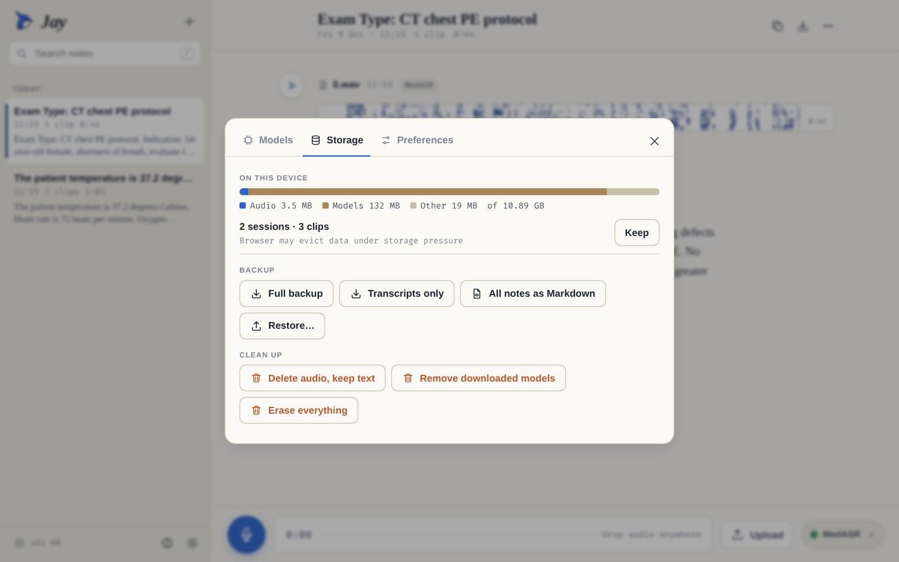
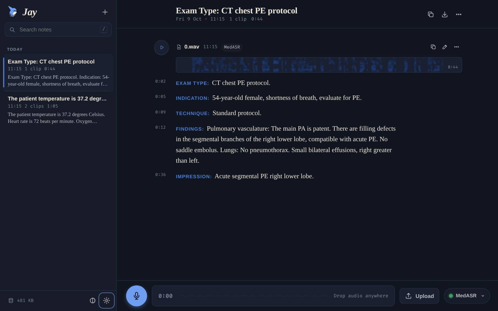
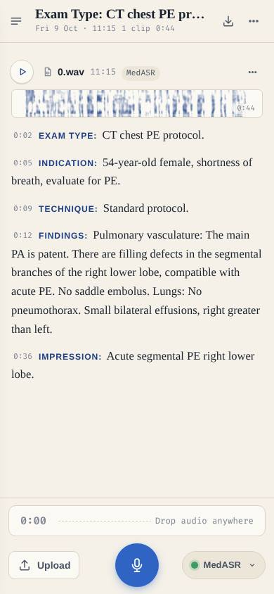
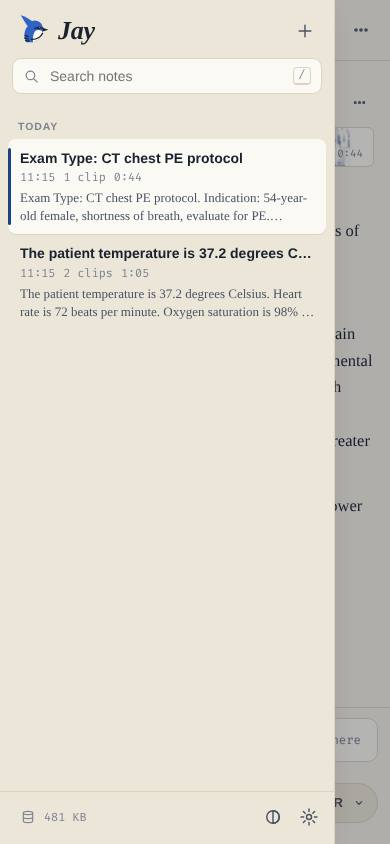
How it flows
mic ─▶ AudioWorklet (mono, sinc 48k→16k) ─▶ main thread ─┬─▶ IndexedDB PCM chunks every 4 s (crash-safe)
└─▶ MediaRecorder safety copy ─────────────────────┤
└─▶ ASR worker
energy VAD · rolling partials · finals queue
ONNX Runtime Web (WASM SIMD, ½ cores, no spin)
Moonshine enc/dec · MedASR log-mel → CTC
─▶ segments with timestamps ─▶ IndexedDB
files ─▶ decodeAudioData @16 kHz ─▶ worker: sonogram + silence-aware chunk plan ─▶ same engine
Bugs found by actually looking
The live sonogram filled up solid blue
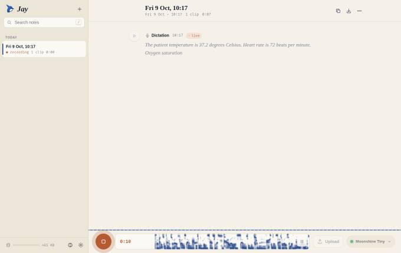
The strip scrolls by drawing the canvas onto itself. With normal source-over blending, every frame re-blended the old semi-transparent ink, so it piled up to opaque.
draw the shift with globalCompositeOperation = "copy".
The phone layout was 516 px wide in a 390 px screen
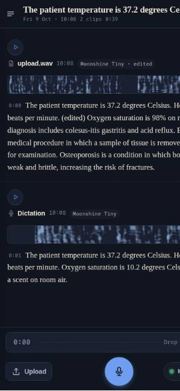
A 1fr grid track has a minimum width of auto, so the un-wrapped session title stretched the whole page.
minmax(0, 1fr) on the app and page grids.
Under load, the “mic” heard about 84% of what was said
source speech span 28.18 s · recorded 23.65 s (8 threads) · 26.86 s (3 threads) worklet saw 12.2 s of audio in 36.1 s wall clock → the AudioContext clock itself stalled bare test page, 4 busy workers, no Jay code: clock 0.30–0.67× realtime (headless sink)
Speech-recognition threads plus ORT’s busy-spinning thread pool starved the real-time audio thread. Headless Chromium’s fake output makes this extreme, and a busy or backgrounded phone can do the same.
use half the cores (max 4) and turn off spinning. Run a parallel MediaRecorder copy; on stop, if the live stream came up short, swap in the full recording and re-transcribe it (the live draft stays available).
The last words of a dictation went missing
Stop cleared the recording state before the worklet’s final flush arrived, so the tail was dropped.
keep accepting PCM until stop() has drained the worklet.
“37.2” became “37. 2”
Sentence splitting (for click-to-seek timing) split on the decimal point.
only split after .?! followed by whitespace.
Radiology sections ran together
Each sentence end flushed the buffer, so the following [INDICATION] marker saw an empty buffer and its line break was lost.
section markers always open a paragraph, with small-caps labels.
Shorter Moonshine chunks made things worse
Capping Moonshine at 10 s cut mid-phrase and lost the word at the join (“a condition which bones”).
back to 15 s, plus a targeted re-decode in two halves only when output looks clipped.
Smaller ones
Visiting this log could have overwritten the app’s offline copy (fixed: per-path service-worker cache keys, and this page is bypassed). A clip deleted mid-transcription could reappear (fixed: save guard and cancel). Restored backups had no sonograms (fixed: rebuilt from audio). A recovered dictation briefly showed “Listening” (fixed: recover before first render).
Verification
$ node _tests/jay-browser.mjs (real Chromium, fake mic fed with the clinical clips) ✓ cross-origin isolated via service worker (WASM threads) ✓ built-in model ready: Moonshine Tiny ready · runs on this device · 4 threads ✓ upload transcribed on device ✓ pause splits paragraphs ✓ live partial transcript while speaking ✓ live dictation finalised through the tail ✓ live sonogram canvas sized · playback from local audio · search finds and highlights ✓ MedASR clinical sections: EXAM TYPE · INDICATION · TECHNIQUE · FINDINGS · IMPRESSION ✓ history persists across reload · no horizontal overflow on phone · no page errors $ node _tests/jay-reliability.mjs ✓ interrupted dictation recovered after a reload mid-recording ✓ deleted-while-transcribing clip stays deleted after reload ✓ full backup → erase everything → restore: audio plays, sonograms regenerated speed in the browser (8-core-class laptop) Moonshine Tiny 28 s of audio in 2.2 s (≈13× realtime) · model warm in <1 s from cache MedASR 43.8 s radiology in 5.1 s (≈9× realtime) · 108 MB download + compile ≈ 4.4 s cold first visit to ready: 3.2–3.7 s (6/6 runs)
The site check confirmed the rest of a.skh.am is untouched: compared with the previous build, the only output differences are the new /jay/ folder and the feed timestamp. Jay’s service worker only handles /jay/. Firefox and WebKit engines are covered by automated runs (see below); not yet tried by hand on an iPhone, or with a real microphone in a noisy room.
Other browsers
Real Firefox 151 and WebKit 26.5 engines, run through Playwright:
$ node _tests/jay-crossbrowser.mjs [firefox] 151.0 boot ok 5.5s isolated · 4 threads · Moonshine Tiny ready [firefox] upload 9.4s: The patient temperature is 37.2 degrees Celsius. Heart rate is 72 beats… [firefox] record ✓ · search ✓ · phone 390 px ✓ · page errors: none [webkit] 26.5 boot ok 3.6s isolated · 4 threads · Moonshine Tiny ready [webkit] upload STUCK → 2.4s after the fixes below [webkit] search ✓ · phone 390 px ✓ · page errors: none
WebKit could not store audio at all
Putting a Blob into IndexedDB failed outright, as it does on older Safari. Every upload stalled on “queued”.
probe once; where Blobs fail, store audio as an ArrayBuffer + type + name and rebuild the Blob on read. No other code needed to change.
decodeAudioData never resolved
In the Linux WebKit build, decoding hung forever, leaving an endless “Transcribing…”.
a native RIFF/WAVE reader (PCM 8/16/24/32, float, extensible) with a windowed-sinc resampler. Jay’s own 16 kHz recordings now skip the codec entirely. Anything else gets a timeout and a clear error instead of a spinner.
Timeline
- 09:20Brief. Read the repo’s static-SPA process; sized Parakeet, MedASR, Moonshine, Whisper and the ORT builds.
- 09:36Reproducible asset pipeline: pinned, checksummed, gzip-sharded under 10 MB per file.
- 09:40Python reference for both models; JS log-mel matches NumPy exactly.
- 10:05First end-to-end run in Chromium: 8 threads, 28 s transcribed in 2.2 s.
- 10:22v1 live on main → GitHub Pages. Live HTTPS run passed, MedASR included.
- 11:30v2: audio-starvation recovery, crash recovery, report sections, accessibility fixes, this log.
- 11:40v3: Firefox and WebKit pass end-to-end; Safari-safe audio storage and WAV decoding.